Assembly
TOOLS REQUIRED- 07GAB-PF50101 Mainshaft Holder
- Or Equivalent
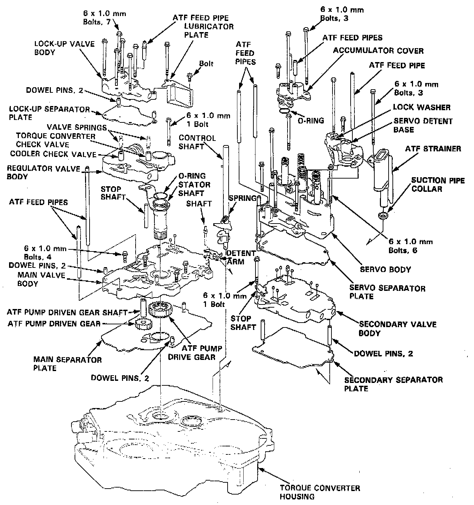
NOTE:
- Coat all parts with ATF.
- Replace the parts:
- O-rings
- Lock washers
- Gaskets Locknuts
- Conical spring washers
- Sealing washers
- TORQUE: 6 x 1.0 mm Bolt 12 Nm (8.7 ft. lbs.).
1. Install the suction pipe collar in the torque converter housing.
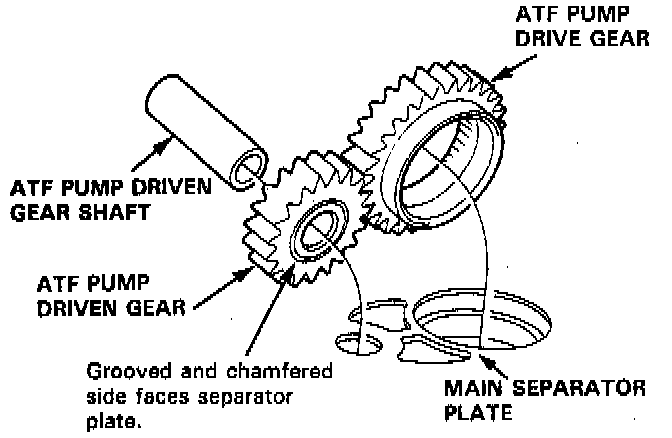
2. Install the main separator plate with two dowel pins on the torque converter housing. Then install the ATF pump drive gear, driven gear and driven gear shaft.
NOTE: Install the ATF pump driven gear with its grooved and chamfered side facing down.
3. Loosely install the main valve body with four bolts. Make sure the ATF pump drive gear rotates smoothly in the normal operating direction and the ATF pump driven gear shaft moves smoothly in the axial and normal operating directions.
4. Install the secondary valve body, separator plate and two dowel pins on the main valve body.
5. Install the control shaft in the housing, with the control shaft and manual valve together.
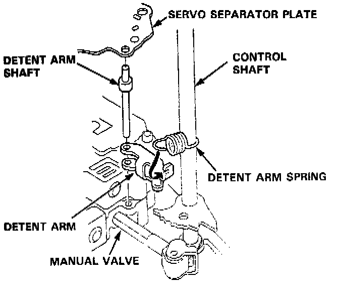
6. Install the detent arm and arm shaft in the main valve body, then hook the detent arm spring to the detent arm.
7. Install the servo body and separator plate (six bolts).
8. Install the accumulator cover (three bolts).
9. Install the servo detent base and ATF strainer and new lock washers (three bolts).
10. Tighten the four bolts to 12 Nm (8.7 ft. lbs.) on the main valve body. Make sure the ATF pump drive gear and ATF pump driven gear shaft move smoothly.
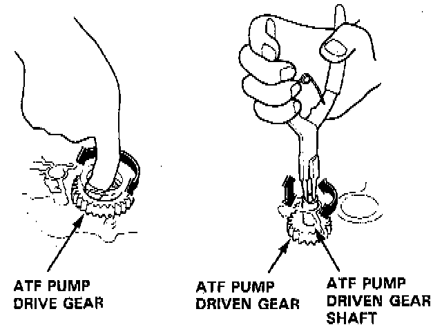
11. If the ATF pump drive gear and ATF pump driven gear shaft do not move freely, loosen the four bolts on the main valve body and disassemble the valve bodies. Realign the ATF pump driven gear shaft and reassemble the valve bodies, then retighten the bolts to the specified torque.
CAUTION: Failure to align the ATF pump driven gear shaft correctly will result in a seized ATF pump drive gear or ATF pump driven gear shaft.
12. Install the stator shaft and stop shaft.
13. Install the stop shaft stay on the secondary valve body (one bolt).
14. Install the regulator valve body with the bolt.
15. Install the torque converter check valve, cooler check valve and valve springs in the regulator valve body.
16. Install the lock-up valve body, separator plate, two dowel pins and lubricator plate (eight bolts).
17. Install the ATF feed pipes.
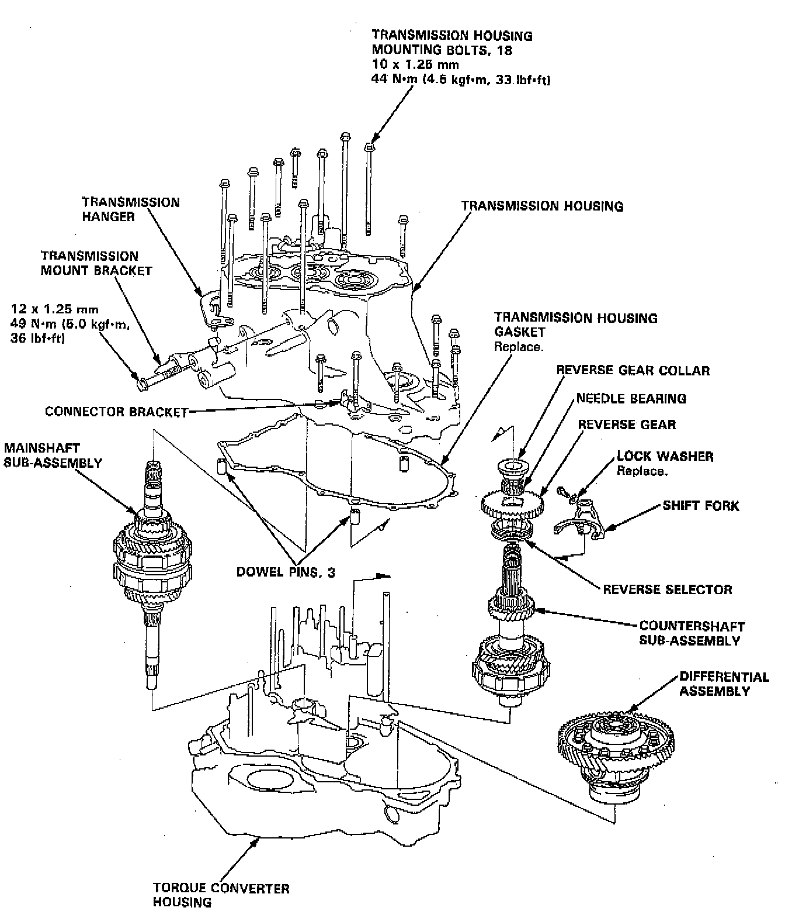
18. Install the sub-shaft assembly in the transmission housing.
19. Install the reverse idler gear and gear shaft holder.
20. Install the differential assembly in the torque converter housing.
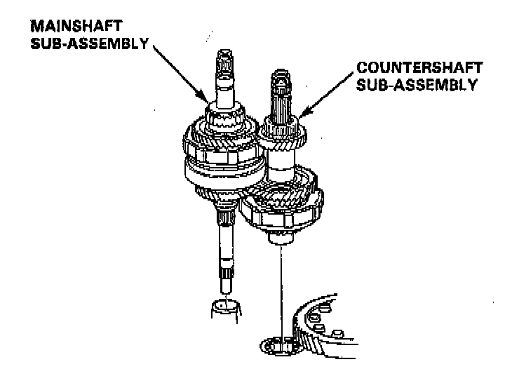
21. Assemble the mainshaft and countershaft subassembly, then install them together in the torque converter housing.
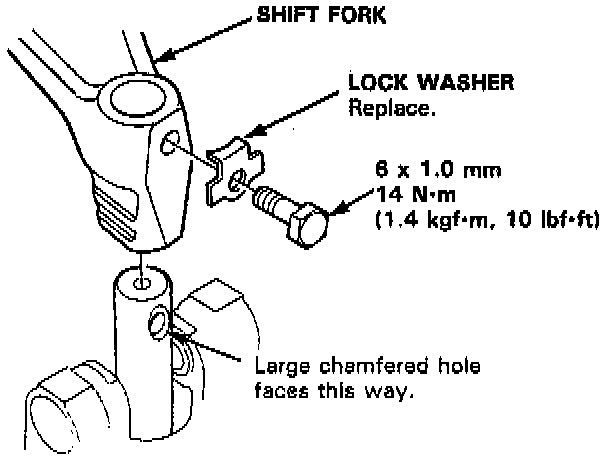
22. Turn the shift fork so the large chamfered hole is facing the fork bolt hole, then install the shift fork with the reverse selector and torque the lock bolt. Bend the lock tab against the bolt head.
23. Install the reverse gear with the collar and needle bearing on the countershaft.
24. Align the spring pin of the control shaft with the transmission housing groove by turning the control shaft.
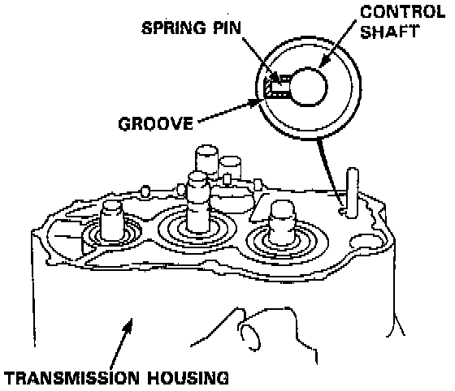
25. Place the transmission housing on the torque converter housing with a new gasket and the three dowel pins.
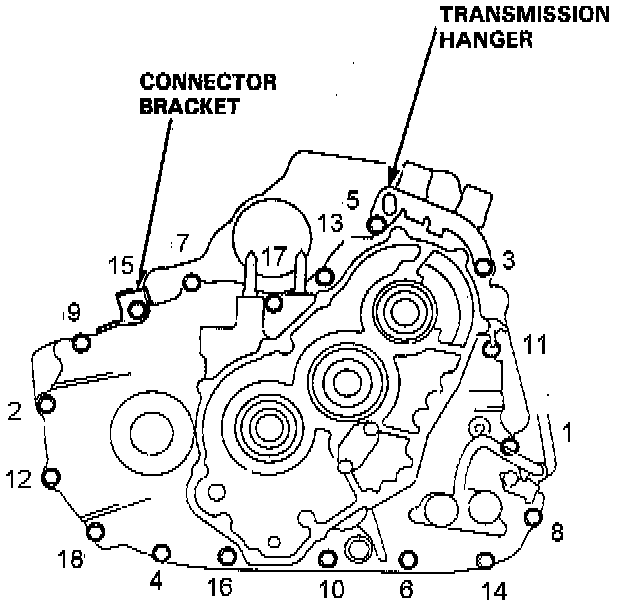
26. Install the transmission housing mounting bolts along with the transmission hanger and the connector bracket, then torque the bolts in two or more steps in the sequence shown.
- TORQUE: 44 Nm (33 ft. lbs.).
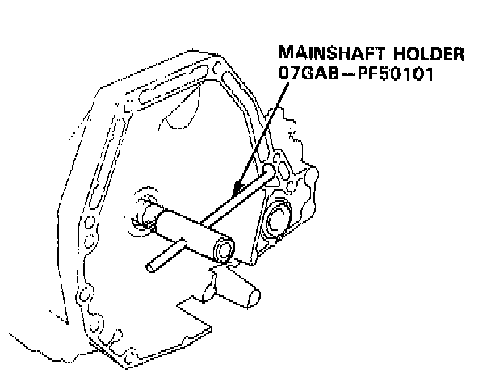
27. Install the special tool onto the mainshaft as shown.
28. Install the parking brake lever on the control shaft.
29. Assemble the one-way clutch and the parking gear with the countershaft 1st gear.
30. Install the countershaft 1st gear collar, needle bearing and the countershaft 1st gear/parking gear assembly on the countershaft.
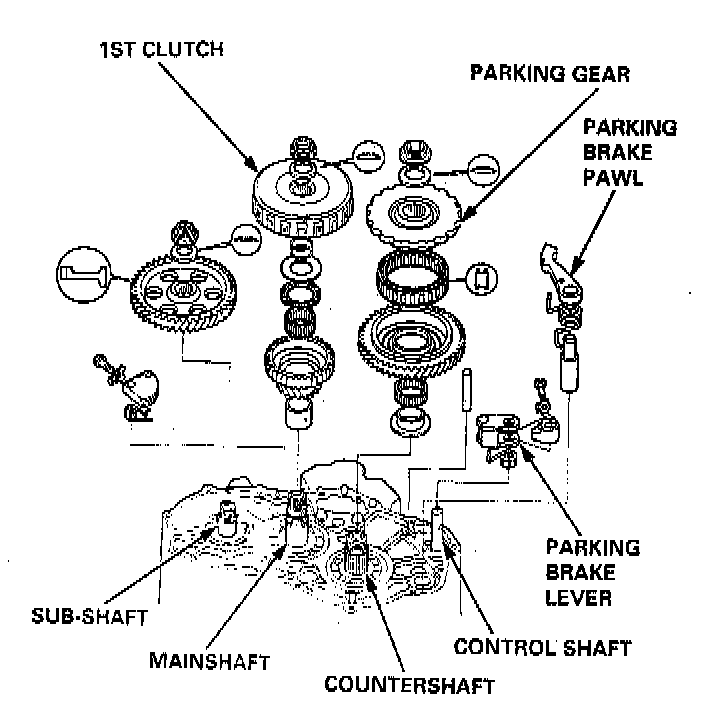
31. Install the parking brake pawl shaft, spring, pawl and pawl stop on the transmission housing, then engage the parking brake pawl with the parking gear.
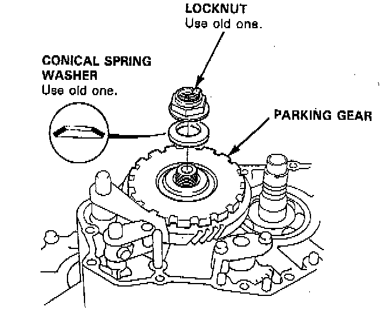
32. Install the old conical spring washer and locknut on the countershaft. Tighten the old locknut to seat the parking gear to the specified torque, then remove them.
NOTE:
- Do not use an impact wrench, always use a torque wrench to tighten the locknut.
- Countershaft locknut has left-hand threads.
- TORQUE: 103 Nm (75.9 ft. lbs.).
33. Install the sub-shaft 1st gear on the sub-shaft.
34. Install the mainshaft 1st gear collar on the mainshaft.
35. Wrap the mainshaft splines with tape to prevent damage the O-rings, then install new O-rings on the mainshaft.
36. Assemble the thrust washer, thrust needle bearing, needle bearing and mainshaft 1st gear on the 1st clutch assembly, then install them on the mainshaft.
37. Align the hole of the sub-shaft 1st gear with the hole of the transmission housing, then insert a pin to hold the sub-shaft while tightening the sub-chaff locknut.
38. Install a new conical spring washers and new locknuts on each shaft.
CAUTION: Install the conical spring washers in the direction shown.
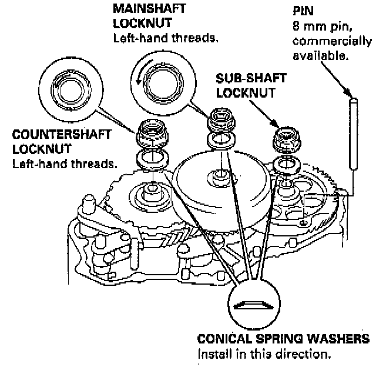
39. Tighten the locknuts to the specified torque.
NOTE:
- Do not use an impact wrench, always use a torque wrench to tighten the locknut.
- Mainshaft and countershaft locknuts have left hand threads.
- TORQUE:
MAINSHAFT: 78 Nm (58 ft. lbs.).
COUNTERSHAFT: 103 Nm (75.9 ft. lbs.).
SUB-SHAFT: 93 Nm (69 ft. lbs.).
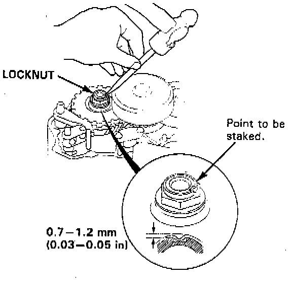
40. Stake each locknut using a 3.5 mm punch as shown.
41. Set the parking brake lever in the P position, then verify that the parking brake pawl engages the parking gear.
42. If the pawl does not engage fully, check the parking brake pawl stop clearance.
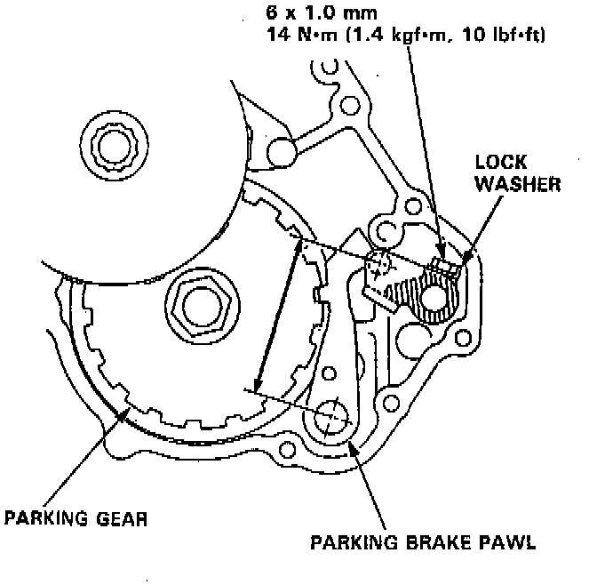
43. Tighten the lock bolt and bend the lock tab.
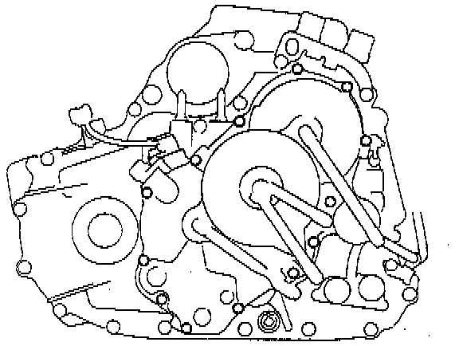
44. Install the right side cover.
- TORQUE: 12 Nm (8.7 ft. lbs.).
45. Install the throttle control drum with the drum spring on the throttle control shaft.
- TORQUE: 7.8 Nm (5.8 ft. lbs.).
46. Install the transmission mount bracket.
- TORQUE: 49 Nm (36 ft. lbs.).
47. Install the ATF cooler pipes with the joint bolts and new sealing washers.
- TORQUE: 28 Nm (21 ft. lbs.).
48. Install the ATF dipstick.